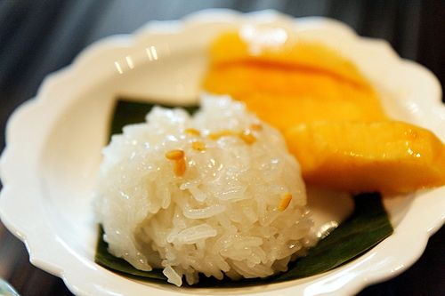

Mango Sticky Rice
Home
This Thai dessert of glutinous sticky rice, seasoned with salty-sweet coconut milk and served with tender, fragrant slices of mango, will be irresistible.
This recipe is originally from serious eats.

Ingredients
- 1 cup Thai sweet sticky rice (7 ounces; 200 g)
- 1 (14-ounce; 400 ml) can full-fat coconut milk, blended well to incorporate fat, divided
- 1/2 cup sugar (3 1/2 ounces; 100 g), divided
- Kosher salt
- 2 teaspoons (6 g) cornstarch
- 2 Ataúlfo mangoes (about 6 ounces or 170 g each), peeled, pitted, and sliced
- Toasted sesame seeds, for garnish
Instructions
- In a large bowl, cover rice with water by several inches and let stand at room temperature 1 hour or up to overnight.
- Drain rice. Assemble a steamer, line with cheesecloth or a clean kitchen towel, and add rice, smoothing surface to form an even layer. Set over high heat, bring water in steamer to a boil, cover, and cook until rice is tender, about 20 minutes.
- Meanwhile, in a small saucepan, bring half the coconut milk to a simmer over medium heat, stirring frequently. Whisk in 1/4 cup plus 2 tablespoons sugar and a large pinch of salt until dissolved. The coconut milk should taste salty-sweet.
- Transfer cooked rice to a large heatproof bowl and pour coconut milk mixture on top (it will look like too much liquid). Stir well to combine, cover with plastic, and let stand until liquid is absorbed, about 20 minutes. (You can let it stand up to 2 hours at room temperature.)
- Meanwhile, clean saucepan and add remaining coconut milk to it. Bring to a simmer over medium heat, stirring frequently. In a small bowl, combine cornstarch with a couple of teaspoons of the hot coconut milk and stir to form a slurry. Whisk cornstarch slurry into coconut milk and simmer until thickened, about 3 minutes. Whisk in remaining 2 tablespoons sugar and a large pinch of salt until dissolved. Keep coconut cream warm.
- When ready to serve, mound coconut rice onto plates and arrange sliced mango alongside. Drizzle coconut cream all over rice and garnish with toasted sesame seeds. Serve right away.